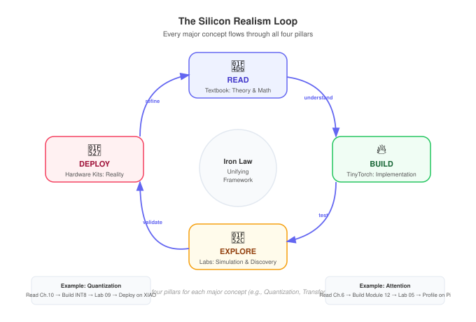

Course Component Map
How Read, Build, Explore, and Deploy connect week by week
The ML Systems curriculum has four pillars. This page shows how they integrate across both semesters — so you can see, at a glance, what students do each week.
The Four Pillars
| Pillar | Resource | What Students Do | Link |
|---|---|---|---|
| Read | Textbook (Vol I or II) | Study principles, equations, and case studies | mlsysbook.ai |
| Build | TinyTorch | Implement framework internals from scratch | mlsysbook.ai/tinytorch |
| Explore | Interactive Labs | Manipulate simulated hardware, discover tradeoffs | mlsysbook.ai/labs |
| Deploy | Hardware Kits | Run models on real edge devices | mlsysbook.ai/kits |
The Theory → Build → Simulation → Reality loop is the core pedagogical cycle. For every major concept (Convolutions, Quantization, Distributed Training), students read the theory, implement it in TinyTorch, explore it in a simulation lab, and (optionally) deploy it on real hardware.

Semester at a Glance

Semester 1: Foundations — Week-by-Week Integration
| Week | Part | Read | Build (TinyTorch) | Explore (Lab) |
|---|---|---|---|---|
| 1 | I | Introduction | Module 01: Tensor | Lab 00 |
| 2 | I | ML Systems | Module 01 (cont.) | Lab 01 |
| 3 | I | ML Workflow | Module 02: Activations | Lab 02 |
| 4 | I | Data Engineering | Module 02 (cont.) | Lab 03 |
| 5 | II | Neural Computation | Module 03: Layers | Lab 04 |
| 6 | II | NN Architectures | Module 04: Losses | Lab 05 |
| 7 | II | ML Frameworks | Module 05: DataLoader | Lab 06 |
| 8 | II | Training | Module 06: Autograd | Lab 07 |
| 9 | III | Data Selection | Module 07: Optimizers | Lab 08 |
| 10 | III | Model Compression | Module 08: Training | Lab 09 |
| 11 | III | HW Acceleration | Module 08 (cont.) | Lab 10 |
| 12 | III | Benchmarking | Catch-up | Lab 11 |
| 13 | IV | Model Serving | Capstone prep | Lab 12 |
| 14 | IV | ML Operations | Capstone prep | Lab 13 |
| 15 | IV | Responsible Engr. | Capstone work | Lab 14 |
| 16 | IV | Conclusion | AI Olympics | Lab 15 |
Semester 2: Scale — Week-by-Week Integration
| Week | Part | Read | Explore (Lab) |
|---|---|---|---|
| 1 | I | Introduction to Scale | Lab 01 |
| 2 | I | Compute Infrastructure | Lab 02 |
| 3 | I | Network Fabrics | Lab 03 |
| 4 | I | Data Storage | Lab 04 |
| 5 | II | Distributed Training | Lab 05 |
| 6 | II | Collective Communication | Lab 06 |
| 7 | II | Fault Tolerance | Lab 07 |
| 8 | II | Fleet Orchestration | Lab 08 |
| 9 | III | Performance Engineering | Lab 09 |
| 10 | III | Inference at Scale | Lab 10 |
| 11 | III | Edge Intelligence | Lab 11 |
| 12 | III | Ops at Scale | Lab 12 |
| 13 | IV | Security & Privacy | Lab 13 |
| 14 | IV | Robust AI | Lab 14 |
| 15 | IV | Sustainable AI + Responsible AI | Lab 15 |
| 16 | IV | Conclusion | Lab 16 |
Hardware Kit Integration Points
Hardware kits are optional but provide powerful “reality checks” at specific moments:
| Week (Sem 1) | Chapter | Hardware Activity | Device |
|---|---|---|---|
| 4 | Data Engineering | Sensor data collection | Arduino Nano 33 BLE |
| 10 | Model Compression | Deploy quantized model | Seeed XIAO ESP32S3 |
| 11 | HW Acceleration | Profile inference | Raspberry Pi + Coral |
| 16 | Capstone | AI Olympics deployment | All three devices |
All hardware experiences are replicated in the interactive labs via mlsysim. Labs simulate the exact memory constraints, thermal limits, and latency profiles of real devices.
The Unifying Thread: The Iron Law
Every optimization in both semesters maps to a specific term in the Iron Law:
\[T \approx \frac{D_{vol}}{BW} + \frac{O}{R_{peak} \cdot \eta} + L_{lat}\]
| Term | Represents | Sem 1 Examples | Sem 2 Examples |
|---|---|---|---|
| \(D_{vol}\) | Data volume | Quantization, pruning | Gradient compression |
| \(BW\) | Bandwidth | Memory hierarchy | InfiniBand, all-reduce |
| \(O\) | Operations | FLOPs, batch size | 3D parallelism |
| \(R_{peak}\) | Peak compute | Tensor Cores | Multi-node scaling |
| \(\eta\) | Efficiency | GPU starvation | Pipeline bubbles |
| \(L_{lat}\) | Latency overhead | Kernel launch | Network latency |
Ready to dive into the details? Choose your syllabus: Foundations (Semester 1) | Scale (Semester 2)